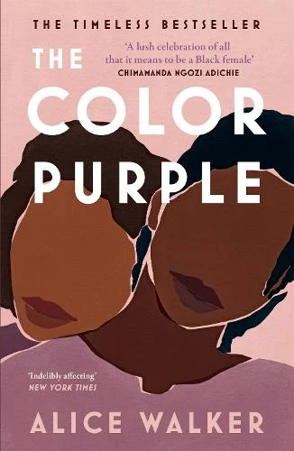

I am a 27 year old, with a BSc in Biochemistry, obtained from Sheffield Hallam University. Currently I am pursuing an MSc course in Computer Science with Artificial Intelligence with an aim to develop the skills and knowledge required to build a career in predictive modelling and data science.
Since graduating, my working career has consisted of employment in different cities, as a microbiologist, a research analyst in drug development and currently as an analytical scientist within the nicotine and cannabinoid chemistry. Working within the industry has taught me vital soft skills such as communication, teamwork, leadership and problem solving. Challenging myself doing a masters, with a PhD as my next goal would allow me to work towards pursuing a career in research, making novel contributions and continue to grow as a professional.
| Job Title | Company | Location |
|---|---|---|
| Microbiologist | ALS Life Sciences | Rotherham |
| Senior Research Analyst | Labcorp | Huntingdon |
| Analytical Scientist | Broughton Life Sciences | Skipton |
Some of my hobbies include:
I am currently reading The Color Purple by Alice Walker, a classic novel that explores themes of resilience and identity, through the story of a young African American woman in the American South, in the early 20th century.
Some of my time is spent watching House Of The Dragon, with the rest spent on improving in badminton and aiming to win my 5 A Side Powerleague.
